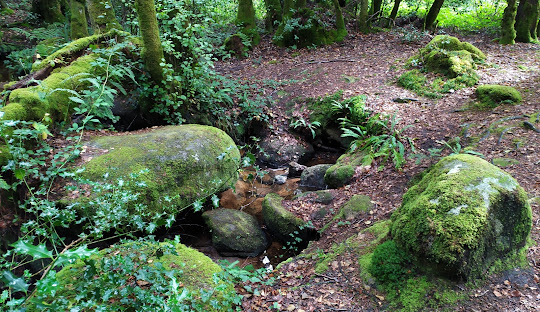
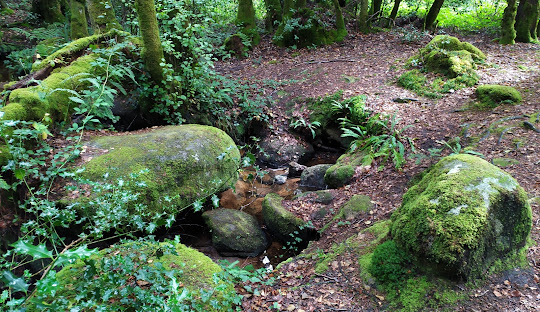

Visiter la Creuse...
Ce site a été conçu par un élève de première spécialité NSI; les textes et images peuvent être soumis à des droits d'auteur.


Vous vous demandez ce que l'on peut visiter en Creuse ?
... Pas de soucis ! Ce site recense plusieurs sites touristiques creusois à découvrir pour vous en mettre plein les yeux !
Husk'in Creuse

 
